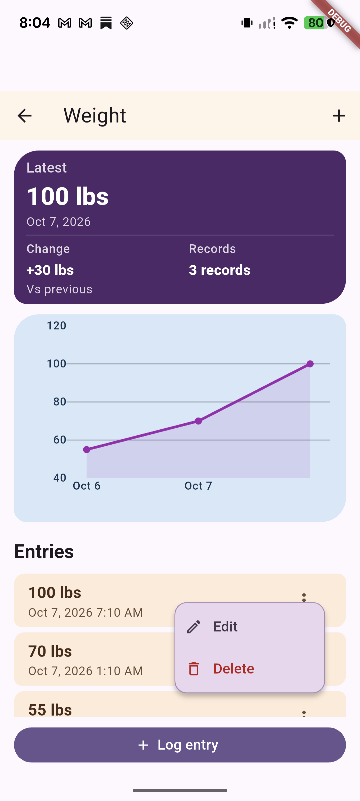

1. Action pop-ups — PopupMenuButton
Anchored to an overflow or row action control. It presents commands such as Activate, Rename, Delete, Edit, or Archive. These are action lists; they do not represent a selected field value.
- Archived plan card: recent custom lavender/plum menu, leading icon tiles, semantic red Delete, and a separated destructive action.
- Plan detail and health entries: separate popup-menu styling and item hierarchy. Historical captures show a warmer/default-looking surface and simpler rows.
- Enabled/disabled states depend on the action and current record state.


